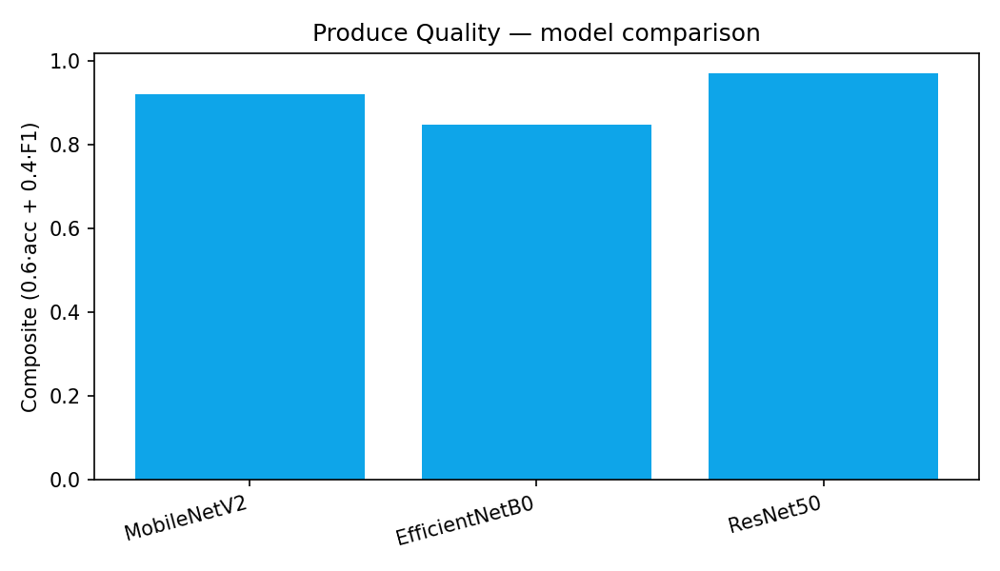

SP Jain MAIB · Group 3 · AI in Operations
Annadata
What we trained, how we compared models, and how the farmer prototype connects inspection → price → yield → market.
Aftaab · Isaac · Ishaan
Agenda
Vision + tabular + forecast — datasets, splits, bake-offs
Hold-out numbers — accuracy / F1 / MAPE
Inspect → mandi price → yield sim → market
Architecture
PlantVillage · disease while growing
97.4%
EfficientNetB0
Fresh vs rotten → Grade A/B/C
97.0%
ResNet50
RandomForest → ONNX in browser
99.3%
Crop hold-out · Fert 100%
GradientBoostingRegressor
3.4%
MAPE · lower is better
Moisture · grade · defects · RPM…
3.52%
MAPE hold-out
data.gov.in mandi modal · free API
A+10% / B / C−20%
Fair price rule
Critical design rule
Why two models? A diseased leaf does not mean the harvested fruit is Grade C. Mixing them would be dishonest grading.
Training · Leaf Health
Leaf · Why this model
97.4%
Hold-out accuracy
Best composite on PlantVillage multi-SKU setup for our line.
Training · Produce Quality
Split: 80% train · 20% validation · transfer learning (freeze → fine-tune) · TensorFlow 2.20
Acc 96.96%
F1 97.12%
EfficientNet won on leaves — not on produce. Task-specific bake-off → we ship ResNet50 TFLite for Grade A/B/C.
Evidence

Chart file missing locally — numbers above are from Colab hold-out export.
Measured hold-out only · no invented marketing metrics
Produce · Why ResNet50
Accuracy gap on the same produce hold-out
Fewer costly Fresh ↔ Rotten confusions
Binary sigmoid head → TFLite → Grade A/B/C map
We did not pick the “famous” model by default. Leaf → EfficientNet. Produce → ResNet50. Whichever won the hold-out.
Tabular models
99.3%
Hold-out accuracy
100%
Hold-out accuracy
Why RandomForest? Strong on small structured agri tables · easy ONNX export · no GPU needed on the farmer phone.
Forecast & process
3.4%
MAPE · GradientBoostingRegressor
Commodity series for demo crops → JSON for Prices UI.
3.52%
MAPE · linear / tree regressor
Inputs: moisture · grade · defects · temp · duration · RPM · batch weight.
MAPE: average % error on hold-out — lower is better. Live mandi modal still comes from Agmarknet (next slides).
KPI strip
97.4%
Leaf
97.0%
Produce
99.3%
Crop RF
3.4%
Price MAPE
100%
Fert RF
3.52%
Yield MAPE
94.2%
Beans pilot
5
CV architectures
Prototype process
Price connect
Example: Modal ₹1,733 → Grade A ≈ ₹1,906 · Grade C ≈ ₹1,386
Production simulation
Same yield engine · different operating points
Wet + high RPM · high defects · low grade · bad temp
Playbook actions + “Optimize line” preset
Ethics · employment
Human path — market listing blocked until supervisor reviews
AI drafts Grade Card · people negotiate & decide
Displacement risk is real. Our answer: cut waste (₹), keep humans on reject/accept, shift skill to exceptions + selling.
Next
Farmer app — inspect, price, yield, market, insights, ethics.
Open
localhost:5173
or annadata-lake.vercel.app
Problem pitch (optional): index.html · This deck: deck.html
1 / 17